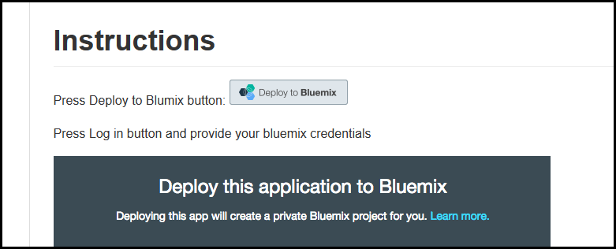

Welcome to the Cupenya Insights on IBM Bluemix support and documentation page
On this page you will find technical documentation and product information about Cupenya Insights on Bluemix.
Getting Started
Follow our Bluemix example tutorial to get a step by step introduction on how to use Cupenya Insights for your Bluemix application.

FAQ
No content yet, any questions? Please contact us.
Support
For the first three months our service will be free on Bluemix to gain experience for us on how it will be used. During this time support is provided round the clock and for free. Please contact us for any questions or if you want to get walked through a step-by-step proof of concept implementation.
If you have any questions please contact us at support@cupenya.com.